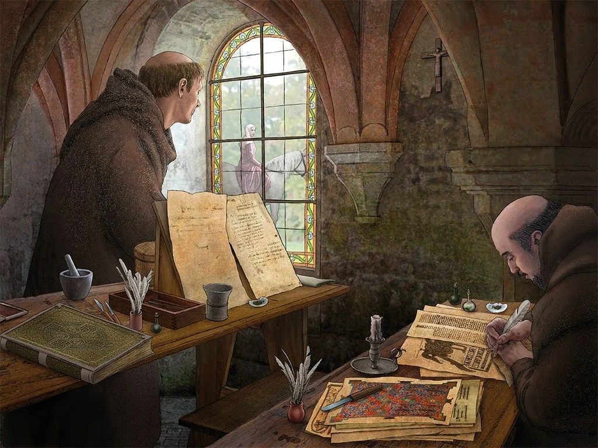
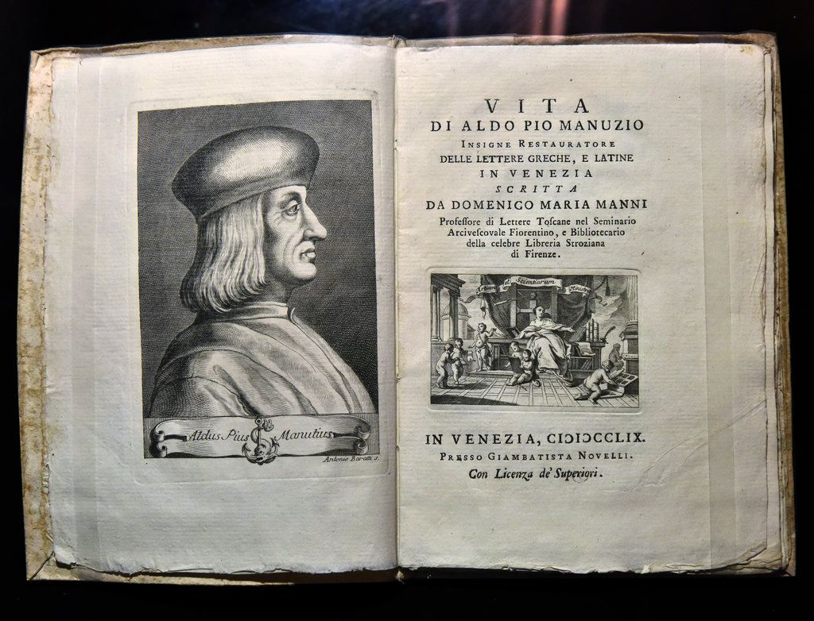
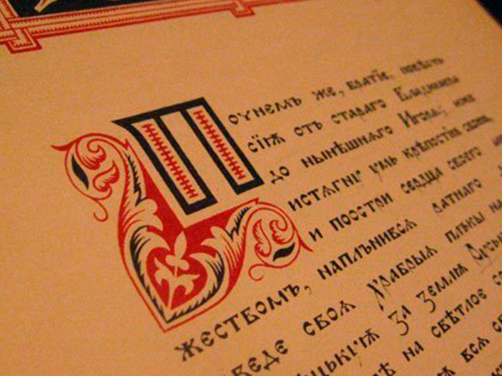

Знаки препинания — элементы письменности, выполняющие вспомогательные функции разделения (выделения) смысловых отрезков текста, предложений, словосочетаний, слов, частей слова. Без знаков препинания письменная речь сольется в единый поток речи, в котором будет непросто разобраться. А в некоторых случаях без знаков препинания в тексте возникнет двусмысленность.
Знаки препинания, синтаксически оформляющие текст, облегчают его зрительное восприятие и понимание, а при воспроизведении текста вслух помогают осуществить его интонационное оформление (интонация, смысловые паузы, логические ударения).
Современная русская пунктуация строится на смысловой и структурно-грамматической основах, которые взаимосвязаны и обуславливают друг друга. Пунктуация отражает смысловое членение письменной речи, указывает на смысловые связи и отношения между отдельными словами и группами слов, на различные смысловые оттенки частей письменного текста.
Принципы пунктуации взаимосвязаны и в одном и том же пунктуационном факте мы можем найти совмещение разных принципов, хотя ведущим является синтаксический (структурный). Современная русская пунктуация опирается и на смысл, и на структуру, и на ритмико-интонационное членение предложения в их взаимодействии. Поэтому русская пунктуация достаточно гибкая и наряду с обязательными правилами содержит указания, допускающие пунктуационные варианты.
Интонационный принцип — основа пунктуации русского языка. Лингвисты Л. В. Щерба, А. М. Пешковский, Л. А. Булаховский считали, что знаки препинания являются формальным показателем ритмики и мелодики речи. С другой стороны, русская пунктуация отражает отчасти интонацию: на месте точки как завершающего знака препинания голос понижается, на месте тире делается более длительная пауза, чем на месте постановки запятой и т. д. Ученый Я. К. Грот указывал синтаксический принцип пунктуации. Он считал, что знаки препинания делают более наглядным синтаксический строй письменной речи, выделяют отдельные предложения и их части в составе сложных предложений.
Логический принцип пунктуации обеспечивает понимание текста, смысловое деление его на части и соответственную постановку знаков препинания. Смысловой принцип особенно заметен при обособлении второстепенных членов предложения, а также в присоединительных и уточняющих конструкциях. Очевидно, что все указанные принципы пунктуации совмещаются в единой системе пунктуации русского языка.
Древнейшим знаком является точка. Она встречается уже в памятниках древнерусской письменности. Однако её употребление в тот период отличалось от современного: во-первых, оно не было регламентировано; во-вторых, точка ставилась не внизу на строке, а выше — посреди неё; кроме того, в тот период даже отдельные слова не отделялись друг от друга. Например: въоновремя•приближашесяпраздникъ•… (Архангельское Евангелие, ХI век). Вот какое объяснение слову точка есть: „ТОЧКА (ткнуть) ж., значок от укола, от приткнутия к чему острием, кончиком пера, карандаша; мелкая крапина“. Точку по праву можно считать родоначальницей русской пунктуации. Не случайно это слово (или его корень) вошло в название таких знаков, как точка с запятой, двоеточие, многоточие. А в русском языке XVI-XVIII веков вопросительный знак назывался точка вопросительная, восклицательный — точка удивления. В грамматических сочинениях XVI века учение о знаках препинания называлось „учением о силе точек “или „о точечном разуме “, а в грамматике Лаврентия Зизания (1596) соответствующий раздел имел название „О точках “.
Наиболее распространённым знаком препинания в русском языке считается запятая. Это слово встречается в XV веке. Слово запятая — это результат субстантивации (перехода в существительное) страдательного причастия прошедшего времени от глагола запяти (ся) — „зацепить(ся) “, „задеть “, „заколоться “. Cвязывает это слово с глаголами запясть, запять, запинать — „останавливать “, „задерживать “.
Первыми писателями, как известно, были средневековые монахи. Они изготавливали рукописные книги в единичных экземплярах, не придерживаясь не только знаков препинания, но даже не разделяя текст на отдельные слова. В большей части рукописей этого периода слова писались почти без промежутков, иногда между словами писцы ставили точку или крестик, но никакими правилами они не руководствовались. Разделение текста появилось лишь в четырнадцатом веке.
Потребность в знаках препинания начала остро ощущаться в связи с появлением и развитием книгопечатания (XV-XVI вв.). В середине XV века итальянские типографы Мануции изобрели пунктуацию для европейской письменности, которая была принята в основных чертах большинством стран Европы и существует до сих пор.
В русском языке большинство известных нам сегодня знаков препинания появляется в XVI-XVIII веках. Так,скобки [()] встречаются в памятниках XVI века. Раньше этот знак назывался „вместительным“
Двоеточие [:] как разделительный знак начинает употребляться с конца XVI века. Оно упоминается в грамматиках Лаврентия Зизания, Мелетия Смотрицкого (1619), а также в первой русской грамматике доломоносовского периода (1731).
Восклицательный знак [!] отмечается для выражения восклицания (удивления) также в грамматиках М. Смотрицкого. Правила постановки „удивительного знака“ определяются в „Российской грамматике“ (1755).
Вопросительный знак [?] встречается в печатных книгах с XVI века, однако для выражения вопроса он закрепляется значительно позже, лишь в XVIII веке. Первоначально в значении [?] встречалась [;].
К более поздним знакам относятся тире [-] и многоточие […]. Впервые знак тире [-] под названием „молчанка “описан в 1797 году в „Российской грамматике “.
Знак многоточие […] под названием “знак пресекательный” отмечается в 1831 году в грамматике, хотя его употребление встречается в практике письма значительно раньше.
Не менее интересна история появления знака, который впоследствии получил название кавычки [» «]. Слово кавычки в значении нотного (крюкового) знака встречается в XVI веке, но в значении знака препинания оно стало употребляться только в конце XVIII века. Учёные считают, что происхождение этого слова не до конца понятно. Сопоставление с украинским названием “лапки” даёт возможность предположить, что оно образовано от глагола “кавыкать” — “ковылять”, “прихрамывать”. В русских диалектах “кавыш” — “утёнок”, “гусёнок”; “кавка” — “лягушка”. Таким образом, кавычки — “следы от утиных или лягушачьих лапок”, “крючок”, “закорючка”.
К знакам препинания относится также абзац или красная строка. Абзац служит для выделения значимых частей текста, углубляет предшествующую точку и открывает совершенно новый ход мыслей.
История появления абзаца очень интересна. Появление абзацных отступов связывают с техническим недоразумением. Ещё в недалёком прошлом текст обычно набирался без всяких отступов. Знаки же структурного деления текста часто вписывались краской другого цвета уже после набора основного текста, и поэтому для них оставляли пустое место. Вероятно, однажды вписать знаки забыли, но получившийся текст с отступами читался не хуже, и с тех пор абзацы прочно вошли в типографскую практику.
